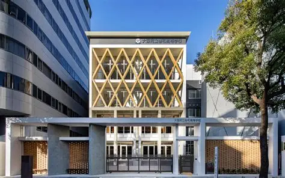

探究を止めるな
生徒会と連携し、設備への不満や予算不足で止まっている生徒の挑戦を吸い上げ、直接支援します。

Philosophy
生徒会と連携し、設備への不満や予算不足で止まっている生徒の挑戦を吸い上げ、直接支援します。
「義務」のような年会費ではなく、個別の具体的なプロジェクトへの「共感」で資金を募ります。
支援によって後輩たちがどう成長したか、そのアクセル効果をすべての卒業生に透明性を持って報告します。
How it works
「こんな設備が欲しい」「この探究を形にしたい」。生徒会を通じて、在校生の声を集めます。
目的・必要な金額・期待される成果を整理し、支援を募るプロジェクトとして公開します。
応援したいプロジェクトを選んで支援。金額も関わり方も、一人ひとりが自由に選べます。
支援がどう使われ、後輩たちがどう成長したか。お知らせで、すべての卒業生に共有します。
Projects
気になる挑戦を見つけて、応援してください。
※ 現在テスト公開中です。実際の寄付は行われません。
Get involved
卒業生のみなさま
共感したプロジェクトへ、1口から支援いただけます。オンライン決済は現在準備中です。
準備中在校生のみなさま
予算や設備の壁で止まっているアイデアはありませんか？ まずは生徒会に相談してください。
提案の流れを見る →同窓会の仲間として
企画・広報・プロジェクト伴走など、できる範囲で一緒に同窓会をつくりませんか。
お問い合わせ →News
FAQ
義務としての年会費ではなく、具体的なプロジェクトへの「共感」で支援いただく形をとっています。活動全般を応援したい方には「継続支援プラン」をご用意する予定です。
各プロジェクトに記載された目的にのみ使用します。支援の使い道とその成果は、お知らせで報告します。
生徒会を窓口として受け付けています。生徒会から同窓会へ共有され、内容を一緒に整理したうえでプロジェクトとして公開します。
オンライン決済の仕組みを準備中です。開始の際はこのサイトのお知らせでご案内します。
ご質問・ご提案・運営へのご参加は、お気軽にお問い合わせください。